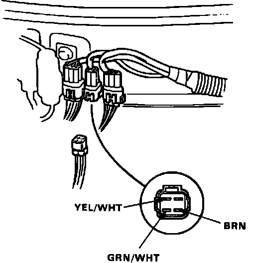
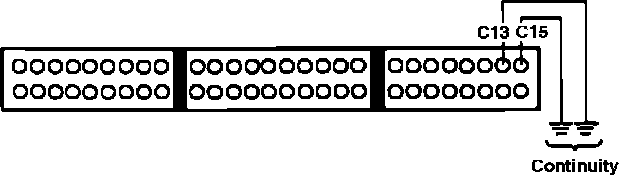
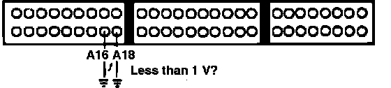
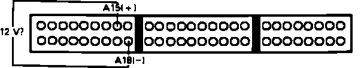

Check Engine Warning Light Is ON - LED Doesn't Blink
1. Turn ignition off. Inspect, and replace if necessary, the following fuses:^ Alternator sense - main fuse box
^ ECU - main fuse box
^ Fuel pump - underdash fuse box
2. Turn ignition on.
3. Observe diagnostic LED.
LED flashing, proceed to next step.
LED not flashing, proceed to step 5.
4. Refer to DIAGNOSIS BY CODE for the codes listed. End of test.
5. If engine will not start, proceed to step 11. If engine starts, continue.
6. Turn ignition off.
7. Disconnect ECU connector B.
8. Turn ignition on and observe check engine light.
Light on, proceed to step 10.
Light off, proceed to next step.
9. Replace electronic control unit.
10. Repair short to ground in BLU wire between ECU terminal B6 and ground. End of test.
11. Disconnect the following sensors one at a time. Observe check engine light after each component.
^ MAP sensor
^ Throttle angle sensor
^ EGR valve lift sensor
12. If the check engine light did not remain on, replace the sensor that caused the light to go out. If the light remained on, continue.
13. Reconnect all sensor connectors.
Ignition Timing Adjuster:

14. Disconnect ignition timing adjuster connector at firewall.
15. Observe diagnostic LED.
Flashing code 18, replace ignition timing adjuster. End of test.
Does not flash, continue.
16. Turn ignition off and reconnect ignition timing adjuster.
17. Install test harness between ECU and connector. If test harness is not available, carefully backprobe wires at ECU connector.
18. Remove test harness connector C from ECU only.
ECU Testing:

19. Check for continuity to ground on ECU terminals C13 and C15.
Continuity, proceed to next step.
No continuity, proceed to step 21.
20. Repair short to ground in YEL/WHT wire between ECU terminal C15 and MAP sensor, or YEL/WHT wire between terminal C13 and PA sensor, timing adjuster or EGR lift sensor.
21. Reconnect ECU connector C and disconnect connector B from ECU.
22. Turn ignition on.
ECU Testing:

23. Measure voltage individually from terminals A16, A18 to ground.
1 volt or above, proceed to next step.
Less than 1 volt, proceed to step 25.
24. Repair open BRN/BLK wire between A18 and ground or BRN/WHT wire between A16 and ground. End of test.
ECU Testing:

25. Measure voltage between ECU terminals A15 and A18.
Battery voltage, proceed to step 27.
No battery voltage, proceed to next step.
26. Check main relay and connections, refer to NO CODE DIAGNOSIS. If relay checks good, check for open YEL/BLK wire between terminal A15 and main relay. Repair as required. End of test.
27. Turn ignition off and substitute known good ECU.
28. Turn ignition on and observe check engine light.
Light on after 2 seconds, replace PA sensor. End of test.
Light off after 2 seconds, replace electronic control unit.